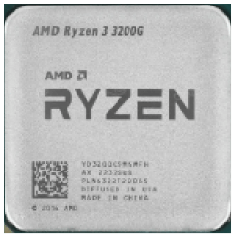
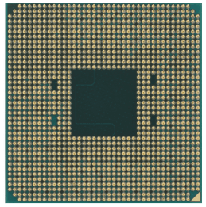

9890 ₽
Процессор AMD Ryzen 3 3200G OEM AM4, 4 x 3.6 ГГц, L2 - 2 МБ, L3 - 4 МБ, 2 х DDR4-2933 МГц, AMD Radeon Vega 8, TDP 65 Вт Процессор AMD Ryzen 3 3200G OEM поддерживает технологию виртуализации, за счет чего возможна одновременная работа в разных операционных системах, без их переустановки. Микроархитектура процессора состоит из 4 ядер и выполнена на основе техпроцесса GlobalFoundries 12LP. Это обеспечивает хорошую производительность и низкое энергопотребление. При увеличении нагрузки рабочая частота ядер автоматически повышается с 3.6 до 4 ГГц.